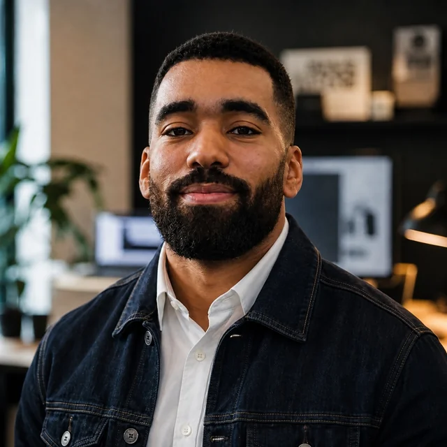
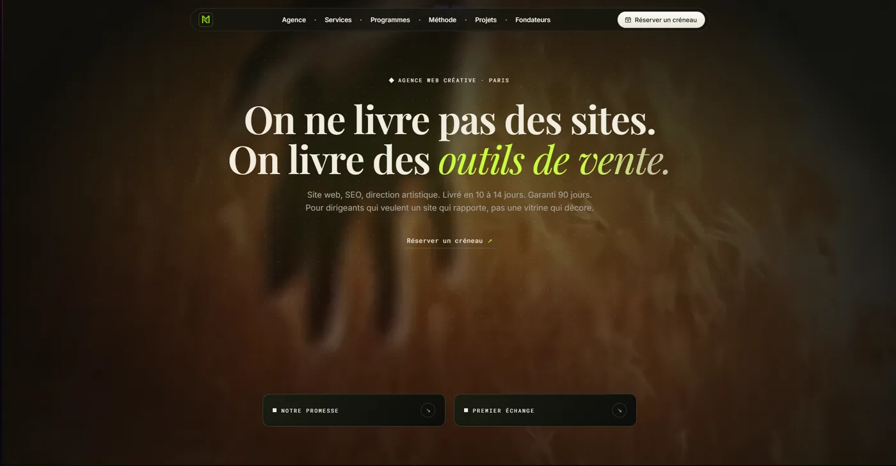
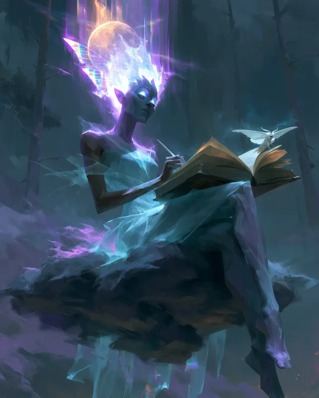

Marketing digital, création web & contenus. Je conçois des sites, produis des contenus et coordonne des projets marketing.
Articles, vidéos et supports de communication. Refonte SharePoint, coordination d’événements et suivi de projets.
Campagnes HubSpot, gestion WordPress, contenus visuels et vidéos, calendrier éditorial.
Création de contenus, community management et prospection LinkedIn.
Production visuelle et vidéo, réseaux sociaux et prospection.
Gestion multicanale de 10 clients, dont ECF et Fayat ; développement commercial.

Mon activité de création web. Projets personnels : Frieren et Riot MMO.

Jeu de cartes en ligne. Boosters, collection, monétisation et duel contre l’IA.